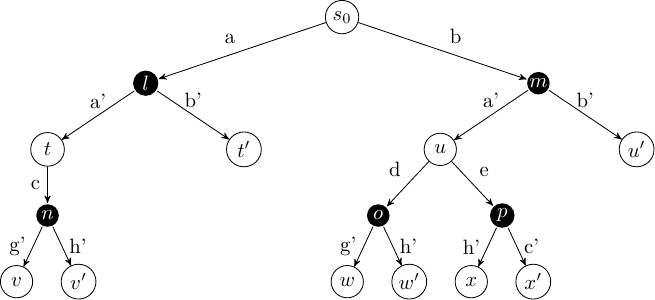

Multi-agent reinforcement learning#
The field of multi-agent reinforcement learning has become quite vast, and there are several algorithms for solving them. We are just going to look at how we can extend the lessons learnt in the first part of these notes to work for stochastic games, which are generalisations of extensive form games.
Learning outcomes
The learning outcomes for this chapter are:
Define ‘stochastic game’.
Explain the difference between single-agent reinforcement learning and multi-agent reinforcement learning.
Overview#
Recall the idea of ExpectiMax trees which we first encountered in the section on Monte-Carlo tree search. ExpectiMax trees are representations of MDPs. Recall that the white nodes are states and the black nodes are what we consider choices by the environment:

Fig. 15 Abstract example of an ExpectiMax Tree#
An extensive form game tree can be thought of as a slight modification to an ExpectiMax tree, except the choice at the black node is no longer left up to the ‘environment’, but is made by another agent instead:

Fig. 16 Extensive form game tree as a reinforcement learning problem#
From this visualisation, we can see that an extensive form game can be solved with model-free reinforcement learning techniques and Monte-Carlo tree search techniques: we can just treat our opponent as the environment; albeit one that has a particular goal itself.
In this section, we just give the intuition of how reinforcement learning techniques can be applied in multi-agent settings like this. Extensions that are specific to multi-agent techniques also exist.
Stochastic games#
Definition – Stochastic game
A stochastic game is a tuple \(G = (S, s_0, A^1, \ldots A^n, r^1, \ldots, r^n, Agt, P, \gamma)\) where:
\(S\) is a set of states
\(s_0\) is the initial state
\(A^j\) is the set of actions for agent \(j\),
\(P: S \times A^1 \times \ldots A^n \rightarrow \Omega(S)\) is a transition function that defines the probability of arriving in a state given a starting state and the actions chosen by all players
\(r^j : S \times A^1 \times \ldots A^n \times S \rightarrow \mathbb{R}\) is the reward function for agent \(j\)
\(\gamma\) is the discount factor
From this definition we can see two things:
A stochastic game is a simply a version of an MDP in which the actions space and reward space are tuples: one action and one reward for each agent. It is, in fact, a generalisation of MDPs because we can just set \(n=1\) and we have a standard MDP.
A stochastic game is a generalisation of an extensive form game. That is, we can express any extensive form game as a stochastic game; but not vice-versa because, for example, actions in extensive form games are deterministic and multiple agents cannot execute actions simultaneously. However, we can simulate an extensive form game by restricting all but one player to playing just a “null” action that has no effect.
Solutions for stochastic games#
In a stochastic game, the solution is a set of policies: one policy \(\pi^j\) for each agent \(j\). The joint policy of all agents is simply
The objective for an agent is to maximise its own expected discounted accumulated reward:
Note that \(a = \pi(s_i)\) is the joint action of all agents. So, each agent’s objective is to maximise its own expected reward considering the possible actions of all other agents.
Multi-agent Independent Q-learning#
Given the similarities between MDPs and stochastic games, we can re-cast our standard Q-learning algorithm as a multi-agent version.
Algorithm 19 (Multi-agent Q-learning)
\( \begin{array}{l} \alginput:\ \text{Stochastic game}\ G = (S, s_0, A^1, \ldots A^n, r^1, \ldots, r^n, Agt, P, \gamma)\\ \algoutput:\ \text{Q-function}\ Q^j\ \text{where}\ j\ \text{is the}\ \mathit{self}\ \text{agent}\\[2mm] \text{Initialise}\ Q^j\ \text{arbitrarily; e.g.,}\ Q^j(s,a)=0\ \text{for all states}\ s\ \text{and joint actions}\ a\\[2mm] \algrepeat \\ \quad\quad s \leftarrow \text{the first state in episode}\ e\\ \quad\quad \algrepeat\ \text{(for each step in episode}\ e \text{)}\\ \quad\quad\quad\quad \text{Select action}\ a^j\ \text{to apply in s;}\\ \quad\quad\quad\quad\quad\quad \text{e.g. using}\ Q^j\ \text{and a multi-armed bandit algorithm such as}\ \epsilon\text{-greedy}\\ \quad\quad\quad\quad \text{Execute action}\ a^j\ \text{in state} s\\ \quad\quad\quad\quad \text{Observe reward}\ r^j\ \text{and new state}\ s'\\ \quad\quad\quad\quad Q^j(s,a) \leftarrow Q^j(s,a) + \alpha \cdot [r^j + \gamma \cdot \max_{a'} Q^j(s',a') - Q^j(s,a)]\\ \quad\quad\quad\quad s \leftarrow s'\\ \quad\quad \alguntil\ \text{the end of episode}\ e\ \text{(a terminal state)}\\ \alguntil\ Q\ \text{converges} \end{array} \)
So, this is just the same as standard Q-learning. This will learn well because the model of MDPs is general enough that the opponents’ actions can just be approximated as the environment.
However, if we want to solve for just an extensive form game, where players take turns, we can modify the above algorithm slightly to make the opponents’ moves more explicit by modifying the execution and update parts of the algorithm:
\( \begin{array}{l} \quad\quad\quad\quad \text{Execute action}\ a^j\ \text{in state}\ s\\ \quad\quad\quad\quad \text{Wait for other agents' actions (via simulation or via play)}\\ \quad\quad\quad\quad \text{Observe rewards}\ r_t^j, \ldots, r_{t+n}^j\ \text{and new state}\ s_{t+n}\\ \quad\quad\quad\quad Q^j(s,a) \leftarrow Q^j(s,a) + \alpha\cdot [r_t^j + \ldots + r_{t+n}^j + \gamma \cdot \max_{a'} Q^j(s_{t+n},a') - Q^j(s,a)] \end{array} \)
This algorithm differs from the first in two main ways:
After execution our action, we do not observe the next state immediately, but instead we wait until it is our turn again, and observe state \(s_{t+n}\), where \(n-1\) moves have been made by other agents.
We observe all rewards that we have received over that sequence, including from other agents.
These two algorithms are equivalent for an extensive form game, however, rather than simulating “null” actions for an agent when it is not their turn, it is often simpler and less computationally expensive to instead use the latter.
These algorithms work well as the learning is independent of all of the other agents. This is known as independent learning. However, it assumes that all the other agents’ policies are stationary — that is, it assumes that the other agents’ policies do not change over time. This is a limitation, but there are several techniques that do not make this assumption, which are out of scope for these notes. However, we can discuss ways to model our opponent for improving multi-agent Q-learning.
Of course, it is not just Q-learning that can be extended to the multi-agent case. Algorithms like value iteration, SARSA and policy-based methods can similarly extended. In the simplest case, they require small changes as we have done above; however, more sophisticated versions that are tailored specifically to handle multiple agents will give better results.
Opponent moves#
The main question we need to answer is: how can we “decide” our opponents moves if we are learning offline?
In a truly model-free problem, we cannot simulate our opponents, however, our opponent will be executing their own moves, so we don’t need to.
However, if we are learning in a simulated environment without real opponents, we will need to simulate their moves ourselves, rather than just “waiting” for their actions. How should we choose actions for opponents’ moves? There are a few ways to do this:
Random selection: Select a random action. This is easy, but it means that we may end up exploring a lot of actions that will never be taken by a good opponent and therefore we will learn poor Q-values for our actions.
Using a fixed policy: We can use an existing stochastic policy that gives reasonable behaviour of the opponent. This could be hand-coded or learnt from a similar game.
Self play: We can simultaneously learn a policy for both ourselves and our opponents, and we choose actions for our opponents based on the learnt policies. If our actions spaces are the same, such as in games like Chess and Tictactoe, we can learn a single policy and have both ourselves and our opponents use it. This is the technique used by AlphaZero.
Multi-agent Monte-Carlo tree search#
Just as we extend Q-learning to a multi-agent case, we can extend Monte-Carlo tree search to the multi-agent case with just a small change in our algorithms.
Multi-agent MCTS is similar to single-agent MCTS. We simply modify the basic MCTS algorithm as follows:
Selection: For ‘our’ moves, we run selection as before, however, we also need to select models for our opponents. In multi-agent MCTS, an easy way to do this is via self-play. Each node has a player whose turn it is, and we use a multi-armed bandit algorithm to choose an action for that player.
Expansion: Instead of expanding a child node based on \(P_a(s' \mid s)\), we expand one of our actions, which leads to our opponents’ node. In the next iteration, that node becomes a node of expansion.
Simulate: We then simulate as before, and we learn the rewards when we receive them. Recall that the rewards are a vector of rewards: one for each player.
Backpropagate: The backpropagation step is the same as before, except that we need to keep the value of the node for every player, not just ourselves.
Takeaways#
Takeaways
For solving extensive form games in a model-free or simulated environment, we can extend techniques like Q-learning, SARSA, and MCTS from single-agent to multi-agent environments in a straightforward way.
Other more sophisticated techniques exist for true stochastic games (with simultaneous moves), such as mean field Q-learning, which reduces the number of possible interactions between actions by approximating joint actions between all pairs of actions, rather than all global interactions among the agents.